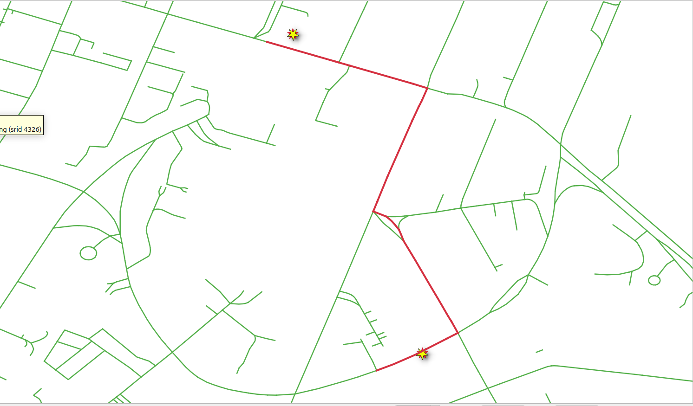
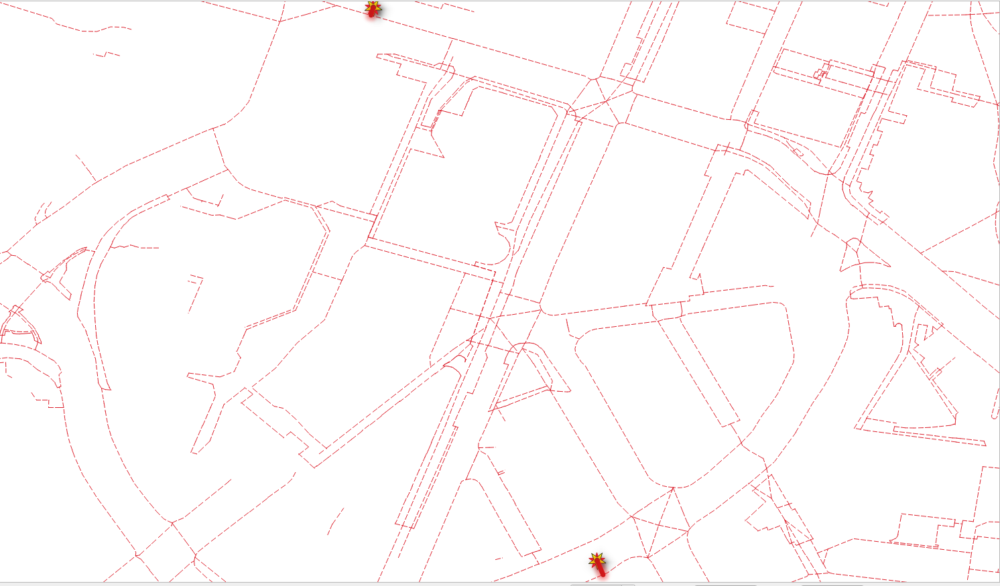

6. Routing using points¶
{kind=link}
Other kind of functions are pl/pgsql. As the applications requirements become more complex, building queries and storing queries in a variable becomes necessary
pgRouting functions in this chapter
6.1. Requirements for routing lat,lon points¶
Problema del capítulo:
Create a function
wrk_withPointsthat allows routing from two point geometries and works forvehicle_nettaxi_netwalk_net
The function takes as input parameters:
The edges table name
Latitude/longitude of two point
Returns
the same information as in Función SQL chapter problem.
or the query that it builds
La descripción detallada:
Parámetros de entrada
Parámetro |
tipo |
Descripción |
|---|---|---|
|
REGCLASS |
Identificador de nombre de tabla perimetral. |
|
NUMERIC |
La latitud del punto de partida. |
|
NUMERIC |
La longitud del punto de partida. |
|
NUMERIC |
La latitud del punto de destino. |
|
NUMERIC |
La longitud del punto de destino. |
|
BOOLEAN |
Flag to create a |
Columnas de resultados
Name |
Type |
Descripción |
|---|---|---|
|
INTEGER |
A unique number for each result row. |
|
BIGINT |
The edge identifier. |
|
TEXT |
The name of the segment. |
|
FLOAT |
The number of seconds it takes to traverse the segment. |
|
FLOAT |
The length in meters of the segment. |
|
FLOAT |
The azimuth of the segment. |
|
TEXT |
The geometry in human readable form. |
|
geometry |
The geometry of the segment in the correct direction. |
Para este capítulo, se utilizarán los siguientes puntos para las pruebas.
(lat,lon) = (-36.850329, 174.763094)
(lat,lon) = (-36.853675, 174.764448)
6.1.1. pgr_findCloseEdges¶
Finds the close edges to a point geometry.
Signature Summary
pgr_findCloseEdges(Edges SQL, point, tolerance, [options])
pgr_findCloseEdges(Edges SQL, points, tolerance, [options])
Options: [cap, dryrun]
Returns set of (edge_id, fraction, side, distance, geom, edge)
OR EMPTY SET
6.1.1.1. Exercise 1: Get the nearest edge¶
{kind=link}
Problema
Get the nearest edge on the graph of the following points.
(pid, lat, lon) = (1, -36.850329, 174.763094)
(pid, lat, lon) = (2, -36.853675, 174.764448)
Solución
Build the geometry of the points with the appropiate SRID. (lines 4 and 10)
Get the union of the individual queries
1SELECT 1 AS pid, * from pgr_findCloseEdges(
2 'SELECT id, geom from vehicle_net',
3 ST_SetSRID(ST_Point(174.763094, -36.850329), 4326) , 0.5)
4
5UNION
6
7SELECT 2 AS pid, * from pgr_findCloseEdges(
8 'SELECT id, geom from vehicle_net',
9 ST_SetSRID(ST_Point(174.764448, -36.853675), 4326) , 0.5);
pid | edge_id | fraction | side | distance | geom | edge
-----+---------+--------------------+------+------------------------+----------------------------------------------------+--------------------------------------------------------------------------------------------
2 | 13329 | 0.6294878020375261 | r | 2.1139024455275325e-05 | 0101000020E6100000C3EFA65B76D86540D734EF38456D42C0 | 0102000020E610000002000000C3EFA65B76D86540D734EF38456D42C0B47D764776D86540394B109B446D42C0
1 | 13914 | 0.4523981946285227 | l | 0.00015323072953684686 | 0101000020E6100000C3B81B446BD8654092EBA694D76C42C0 | 0102000020E610000002000000C3B81B446BD8654092EBA694D76C42C07D9577EB6AD8654023E32C68DC6C42C0
(2 rows)
6.1.2. pgr_withPoints¶
Returns the shortest path in a graph with additional temporary vertices.
Signature Summary
pgr_withPoints(Edges SQL, Points SQL, start vid, end vid, [driving side] [options])
pgr_withPoints(Edges SQL, Points SQL, start vid, end vids, [driving side] [options])
pgr_withPoints(Edges SQL, Points SQL, start vids, end vid, [driving side] [options])
pgr_withPoints(Edges SQL, Points SQL, start vids, end vids, [driving side] [options])
pgr_withPoints(Edges SQL, Points SQL, Combinations SQL, [driving side] [options])
options: [directed, details])
Returns set of (seq, path_seq, start_vid, end_vid, node, edge, cost, agg_cost)
OR EMPTY SET
6.1.2.1. Exercise 2: Point routing¶
Problema
Route from point 1 to point 2 on the vehicle_net where:
point 1: (lat, lon) = (1, -36.850329, 174.763094)
point 2: (lat, lon) = (2, -36.853675, 174.764448)
Solución
The query from Exercise 1: Get the nearest edge is used as the inner query for points.
Using negative values to avoid conficts with vertices with the same value:
Routing from point -1 to point -2
SELECT * FROM pgr_withPoints(
'SELECT id, source, target, cost, reverse_cost from vehicle_net',
$$
SELECT 2 AS pid, * from pgr_findCloseEdges(
'SELECT id, geom from vehicle_net',
ST_SetSRID(ST_Point(174.763094, -36.850329), 4326), 0.5)
UNION
SELECT 1 AS pid, * from pgr_findCloseEdges(
'SELECT id, geom from vehicle_net',
ST_SetSRID(ST_Point(174.764448, -36.853675), 4326), 0.5)
$$,
-1, -2);
seq | path_seq | node | edge | cost | agg_cost
-----+----------+-------+-------+---------------------+--------------------
1 | 1 | -1 | 13329 | 3.3481396619482204 | 0
2 | 2 | 12513 | 68 | 1.4727350461561834 | 3.3481396619482204
3 | 3 | 50 | 67 | 1.758141889125962 | 4.820874708104403
4 | 4 | 12514 | 13330 | 12.425683001917955 | 6.579016597230366
5 | 5 | 1274 | 8311 | 3.4417508481182297 | 19.00469959914832
6 | 6 | 7531 | 73 | 1.9383095037564986 | 22.44645044726655
7 | 7 | 54 | 24407 | 1.457740965097048 | 24.38475995102305
8 | 8 | 18034 | 18336 | 3.689946567463265 | 25.8425009161201
9 | 9 | 2460 | 2954 | 8.267784444724203 | 29.532447483583365
10 | 10 | 2464 | 15765 | 2.0478192993259485 | 37.80023192830757
11 | 11 | 2463 | 11791 | 1.0025660070585647 | 39.84805122763352
12 | 12 | 10903 | 130 | 1.7702879228452317 | 40.85061723469208
13 | 13 | 94 | 11793 | 1.830544982165137 | 42.620905157537315
14 | 14 | 10905 | 3500 | 9.454572806811733 | 44.45145013970245
15 | 15 | 2930 | 146 | 5.769486041547762 | 53.906022946514184
16 | 16 | 106 | 29518 | 4.471683943394075 | 59.67550898806195
17 | 17 | 22355 | 24382 | 3.142102689862175 | 64.14719293145602
18 | 18 | 18018 | 21175 | 1.3441548384543278 | 67.28929562131819
19 | 19 | 15313 | 17428 | 0.6781257720714686 | 68.63345045977252
20 | 20 | 107 | 147 | 1.0610597069553096 | 69.31157623184399
21 | 21 | 10896 | 11784 | 7.792238412654899 | 70.37263593879929
22 | 22 | 12144 | 12991 | 0.663977519059618 | 78.16487435145419
23 | 23 | 104 | 143 | 0.9050879680417474 | 78.8288518705138
24 | 24 | 14323 | 15011 | 3.8882832525446855 | 79.73393983855554
25 | 25 | 6871 | 7566 | 4.755782273813472 | 83.62222309110022
26 | 26 | 13315 | 14057 | 1.3415265226624806 | 88.37800536491369
27 | 27 | 103 | 26901 | 0.6641380789275919 | 89.71953188757617
28 | 28 | 20292 | 29950 | 1.0113585426357805 | 90.38366996650376
29 | 29 | 22705 | 20867 | 0.24342587464918525 | 91.39502850913954
30 | 30 | 15027 | 21367 | 0.742821047251197 | 91.63845438378873
31 | 31 | 15494 | 17489 | 0.6183258625972434 | 92.38127543103992
32 | 32 | 1922 | 9025 | 3.243694926773836 | 92.99960129363717
33 | 33 | 8166 | 2340 | 0.853651606529412 | 96.24329622041101
34 | 34 | 1921 | 12536 | 6.665293205653058 | 97.09694782694042
35 | 35 | 11680 | 2341 | 0.14616976613122326 | 103.76224103259348
36 | 36 | 1923 | 13439 | 2.2329834676932347 | 103.9084107987247
37 | 37 | 12622 | 128 | 1.1105323980615072 | 106.14139426641793
38 | 38 | 93 | 15224 | 1.5578272497118442 | 107.25192666447944
39 | 39 | 14533 | 13914 | 2.620941709353513 | 108.80975391419129
40 | 40 | -2 | -1 | 0 | 111.4306956235448
(40 rows)
6.1.2.2. Exercise 3: Creating the point routing function¶
Problema
Create the function wrk_withPoints to route from locations using latitude
and longitude values.
Analyze the function.
Solución
Creating a plpgsql function.
-- DROP FUNCTION wrk_withPoints(regclass, bigint, bigint);
CREATE OR REPLACE FUNCTION wrk_withPoints(
IN edges_subset REGCLASS,
IN lat1 NUMERIC, IN lon1 NUMERIC,
IN lat2 NUMERIC, IN lon2 NUMERIC,
IN do_debug BOOLEAN DEFAULT false,
OUT seq INTEGER, OUT id BIGINT, OUT seconds FLOAT, OUT name TEXT, OUT length FLOAT,
OUT route_readable TEXT,
OUT route_geom geometry,
OUT azimuth FLOAT
)
-- signature ends
RETURNS SETOF record AS
$BODY$
DECLARE
closest_query TEXT;
resuts_query TEXT;
additional_query TEXT;
final_query TEXT;
BEGIN
-- 0
closest_query := format(
$cq$SELECT 1 AS pid, * from pgr_findCloseEdges(
$q1$ SELECT id, geom from %1$I $q1$,
ST_SetSRID(ST_Point(%2$s, %3$s), 4326) , 0.5)
UNION
SELECT 2 AS pid, * from pgr_findCloseEdges(
$q1$ SELECT id, geom from %1$I $q1$,
ST_SetSRID(ST_Point(%4$s, %5$s), 4326) , 0.5)
$cq$, edges_subset, lon1, lat1, lon2, lat2);
-- 1
resuts_query := format(
$$SELECT seq, edge AS id, node, cost AS seconds
FROM pgr_withPoints(
'SELECT * FROM %1$I',
'%2$s',
-1, -2)
$$, edges_subset, closest_query);
-- 2
additional_query := format(
$$SELECT
seq, id, seconds, name, length,
CASE
WHEN node = source THEN ST_AsText(geom)
ELSE ST_AsText(ST_Reverse(geom))
END AS readable,
CASE
WHEN node = source THEN geom
ELSE ST_Reverse(geom)
END AS geom
FROM results
LEFT JOIN %1$I USING (id)
ORDER BY seq
$$, edges_subset);
-- 3
final_query :=
'WITH
results AS (' || resuts_query || '),
additional AS ( ' || additional_query || ')
SELECT *, degrees(ST_azimuth(ST_StartPoint(geom), ST_EndPoint(geom))) AS azimuth
FROM additional ORDER BY seq';
-- 4
IF do_debug THEN
RAISE NOTICE '%', final_query;
RETURN;
END IF;
RETURN QUERY EXECUTE final_query;
END;
$BODY$
LANGUAGE plpgsql;
Analysis
Firma de la función:
The input parameters instead of vertex identifiers, now it has the latitude and longitude of a couple of points.
The function returns the same set of values calculated on the Función SQL.
1-- DROP FUNCTION wrk_withPoints(regclass, bigint, bigint);
2
3CREATE OR REPLACE FUNCTION wrk_withPoints(
4 IN edges_subset REGCLASS,
5 IN lat1 NUMERIC, IN lon1 NUMERIC,
6 IN lat2 NUMERIC, IN lon2 NUMERIC,
7 IN do_debug BOOLEAN DEFAULT false,
8
9 OUT seq INTEGER, OUT id BIGINT, OUT seconds FLOAT, OUT name TEXT, OUT length FLOAT,
10 OUT route_readable TEXT,
11 OUT route_geom geometry,
12 OUT azimuth FLOAT
13)
Getting the closest query:
The query looks like the one on Exercise 1: Get the nearest edge
Using PostgreSQL
formatto make substitutions.El primer parámetro es la cadena que debe ser sustituida
El resto son los parámetros de datos, son las cadenas para la sustitución.
Los valores
lat1,lon1sustituirán a%2$s, %3$srespectivamente.Los valores
lat2,lon2sustituirán a%4$s, %5$srespectivamente.
1 closest_query := format(
2 $cq$SELECT 1 AS pid, * from pgr_findCloseEdges(
3 $q1$ SELECT id, geom from %1$I $q1$,
4 ST_SetSRID(ST_Point(%2$s, %3$s), 4326) , 0.5)
5
6 UNION
7
8 SELECT 2 AS pid, * from pgr_findCloseEdges(
9 $q1$ SELECT id, geom from %1$I $q1$,
10 ST_SetSRID(ST_Point(%4$s, %5$s), 4326) , 0.5)
11 $cq$, edges_subset, lon1, lat1, lon2, lat2);
Getting the routing results:
The query looks like the one on Exercise 2: Point routing
Using PostgreSQL
formatto make substitutions.The
edges_subsetvalue will replace%1$I.The
closest_queryvalue will replace%2$s.
1 resuts_query := format(
2 $$SELECT seq, edge AS id, node, cost AS seconds
3 FROM pgr_withPoints(
4 'SELECT * FROM %1$I',
5 '%2$s',
6 -1, -2)
7 $$, edges_subset, closest_query);
Getting the additional information:
The subquery looks like the one in the function created on Función SQL.
A joined table can not be a variable
Using PostgreSQL
formatto make substitutions.To make it work on the
walk_net, the whole query needs to be inTEXT.El valor de
edges_subsetsustituirá a%1$I:
1 additional_query := format(
2 $$SELECT
3 seq, id, seconds, name, length,
4 CASE
5 WHEN node = source THEN ST_AsText(geom)
6 ELSE ST_AsText(ST_Reverse(geom))
7 END AS readable,
8
9 CASE
10 WHEN node = source THEN geom
11 ELSE ST_Reverse(geom)
12 END AS geom
13 FROM results
14 LEFT JOIN %1$I USING (id)
15 ORDER BY seq
16 $$, edges_subset);
Building the complete query:
The complete query looks like the one in the function created on Función SQL.
Concatenation of strings is used.
1 final_query :=
2 'WITH
3 results AS (' || resuts_query || '),
4 additional AS ( ' || additional_query || ')
5 SELECT *, degrees(ST_azimuth(ST_StartPoint(geom), ST_EndPoint(geom))) AS azimuth
6 FROM additional ORDER BY seq';
6.1.2.3. Exercise 4: Using wrk_withPoints¶
Problema
Use wrk_withPoints
Departure point is: (lat,lon) =
(-36.850329, 174.763094)Destination point is: (lat,lon) =
(-36.853675, 174.764448)Para
vehicle_net:Get the names of the streets of the route.
Para
taxi_net:Get the query that is been generated.
Para
walk_net:Utilizar con el valor predeterminado de
do_debug.Almacene los resultados en una tabla.
Mostrar el contenido de la tabla.
Solución
Para vehicle_net:
El primer parámetro es el nombre de la tabla.
Los dos siguientes dos parámetros son la latitud y longitud del punto de partida.
Los dos siguientes dos parámetros son la latitud y longitud del punto de destino.
Utilizar con el valor predeterminado de
do_debug.
SELECT DISTINCT name
FROM wrk_withPoints(
'vehicle_net',
-36.850329, 174.763094,
-36.853675, 174.764448);
name
-----------------------
Mayoral Drive
Wellesley Street West
Queen Street
Wakefield Street
(5 rows)
Para taxi_net:
Agregar
truepara obtener la consulta que es ejecutuda.
SELECT *
FROM wrk_withPoints(
'taxi_net',
-36.850329, 174.763094,
-36.853675, 174.764448,
true);
psql:withPoints.sql:132: NOTICE: WITH
results AS (SELECT seq, edge AS id, node, cost AS seconds
FROM pgr_withPoints(
'SELECT * FROM taxi_net',
'SELECT 1 AS pid, * from pgr_findCloseEdges(
$q1$ SELECT id, geom from taxi_net $q1$,
ST_SetSRID(ST_Point(174.763094, -36.850329), 4326) , 0.5)
UNION
SELECT 2 AS pid, * from pgr_findCloseEdges(
$q1$ SELECT id, geom from taxi_net $q1$,
ST_SetSRID(ST_Point(174.764448, -36.853675), 4326) , 0.5)
',
-1, -2)
),
additional AS ( SELECT
seq, id, seconds, name, length,
CASE
WHEN node = source THEN ST_AsText(geom)
ELSE ST_AsText(ST_Reverse(geom))
END AS readable,
CASE
WHEN node = source THEN geom
ELSE ST_Reverse(geom)
END AS geom
FROM results
LEFT JOIN taxi_net USING (id)
ORDER BY seq
)
SELECT *, degrees(ST_azimuth(ST_StartPoint(geom), ST_EndPoint(geom))) AS azimuth
FROM additional ORDER BY seq
Para walk_net:
SELECT *
INTO example
FROM wrk_withPoints(
'walk_net',
-36.850329, 174.763094,
-36.853675, 174.764448);
SELECT * FROM example;
SELECT 36
seq | id | seconds | name | length | route_readable | route_geom | azimuth
-----+-------+--------------------+------+--------------------+-------------------------------------------------------------------------------------------------------------------------------------------------------------+----------------------------------------------------------------------------------------------------------------------------------------------------------------------------------------------------------------------------+--------------------
1 | 29626 | 23.371237516754732 | | 66.400880416819 | LINESTRING(174.7635749 -36.8505156,174.7628732 -36.8503156) | 0102000020E6100000020000007DF1A0346FD86540715EF7B1DD6C42C0D69F0E7569D86540AAA33E24D76C42C0 | 285.9087224649029
2 | 29625 | 2.2207109475493247 | | 4.4414218950986495 | LINESTRING(174.7635749 -36.8505156,174.7635589 -36.8505535) | 0102000020E6100000020000007DF1A0346FD86540715EF7B1DD6C42C03B0213136FD86540C9FFE4EFDE6C42C0 | 202.8877004343617
3 | 28024 | 3.57917954204781 | | 7.15835908409562 | LINESTRING(174.7635589 -36.8505535,174.7635343 -36.8506149) | 0102000020E6100000020000003B0213136FD86540C9FFE4EFDE6C42C0FAFB7BDF6ED86540C27EF4F2E06C42C0 | 201.8335800410294
4 | 18992 | 3.160630525394114 | | 6.321261050788228 | LINESTRING(174.7635343 -36.8506149,174.7635125 -36.8506691) | 0102000020E610000002000000FAFB7BDF6ED86540C27EF4F2E06C42C0CA32C4B16ED86540DF1B9EB9E26C42C0 | 201.91068294370143
5 | 14007 | 1.8468021102984056 | | 3.693604220596811 | LINESTRING(174.7635125 -36.8506691,174.7635518 -36.8506796) | 0102000020E610000002000000CA32C4B16ED86540DF1B9EB9E26C42C0A9392F046FD86540EBAFB211E36C42C0 | 104.95863607726365
6 | 6226 | 1.2082943146202543 | | 2.4165886292405085 | LINESTRING(174.7635518 -36.8506796,174.7635775 -36.8506865) | 0102000020E610000002000000A9392F046FD86540EBAFB211E36C42C0C4CE143A6FD865400953944BE36C42C0 | 105.02850506804229
7 | 6228 | 1.3688382090304236 | | 2.7376764180608473 | LINESTRING(174.7635775 -36.8506865,174.7635886 -36.8507095) | 0102000020E610000002000000C4CE143A6FD865400953944BE36C42C026135C516FD86540C172840CE46C42C0 | 154.2376392843747
8 | 10598 | 1.0516511592046611 | | 2.1033023184093222 | LINESTRING(174.7635886 -36.8507095,174.7635805 -36.8507273) | 0102000020E61000000200000026135C516FD86540C172840CE46C42C0A06B5F406FD865403EA8D5A1E46C42C0 | 204.4682018328484
9 | 16328 | 2.9030052547152922 | | 5.8060105094305845 | LINESTRING(174.7635805 -36.8507273,174.7636413 -36.850746) | 0102000020E610000002000000A06B5F406FD865403EA8D5A1E46C42C0FF2BE1BF6FD86540F699B33EE56C42C0 | 107.09610670921177
10 | 16271 | 1.9947022955966425 | | 3.989404591193285 | LINESTRING(174.7636413 -36.850746,174.7636831 -36.8507588) | 0102000020E610000002000000FF2BE1BF6FD86540F699B33EE56C42C041608A1770D86540616413AAE56C42C0 | 107.02564084235811
11 | 16329 | 0.6496961078179139 | | 1.2993922156358277 | LINESTRING(174.7636831 -36.8507588,174.7636967 -36.850763) | 0102000020E61000000200000041608A1770D86540616413AAE56C42C005D20F3470D86540CCD24ECDE56C42C0 | 107.16191881411814
12 | 29863 | 28.00996692500768 | | 56.01993385001536 | LINESTRING(174.7636967 -36.850763,174.7642423 -36.8509356,174.7642524 -36.850942,174.7642621 -36.850951,174.7642655 -36.850962) | 0102000020E61000000500000005D20F3470D86540CCD24ECDE56C42C0099744AC74D8654046802E75EB6C42C077FC72C174D865407C65DEAAEB6C42C050A2CAD574D86540CFBF5DF6EB6C42C0C1FEEBDC74D86540C311A452EC6C42C0 | 109.28286685957346
13 | 29867 | 0.5158589450466263 | | 1.0317178900932527 | LINESTRING(174.7642655 -36.850962,174.7642626 -36.850971) | 0102000020E610000002000000C1FEEBDC74D86540C311A452EC6C42C0CA11D7D674D86540166C239EEC6C42C0 | 197.86009406384906
14 | 29862 | 41.70154710974468 | | 83.40309421948936 | LINESTRING(174.7642626 -36.850971,174.7639946 -36.8516016,174.7639603 -36.8516822) | 0102000020E610000003000000CA11D7D674D86540166C239EEC6C42C042AACDA472D86540539CFE47016D42C028FEDE5C72D86540ECCA1DEC036D42C0 | 203.02822142606416
15 | 29846 | 8.699445413201715 | | 17.39889082640343 | LINESTRING(174.7639603 -36.8516822,174.7639354 -36.8518377) | 0102000020E61000000200000028FEDE5C72D86540ECCA1DEC036D42C037E8A62872D86540FB7F8B04096D42C0 | 189.09746206529687
16 | 29854 | 9.067411635261436 | | 18.134823270522872 | LINESTRING(174.7639354 -36.8518377,174.7638803 -36.851995) | 0102000020E61000000200000037E8A62872D86540FB7F8B04096D42C0E15119B571D8654082AD122C0E6D42C0 | 199.30464717491748
17 | 29848 | 3.218397933113156 | | 6.436795866226312 | LINESTRING(174.7638803 -36.851995,174.7638615 -36.852051) | 0102000020E610000002000000E15119B571D8654082AD122C0E6D42C08D25AC8D71D8654016C3D501106D42C0 | 198.55763768961484
18 | 32102 | 9.231340721426792 | | 18.462681442853583 | LINESTRING(174.7638615 -36.852051,174.7637982 -36.8522094) | 0102000020E6100000020000008D25AC8D71D8654016C3D501106D42C0CC37EC0871D86540012C9732156D42C0 | 201.78269760450377
19 | 20385 | 2.9879556087113213 | | 5.9759112174226425 | LINESTRING(174.7637982 -36.8522094,174.7638387 -36.8522523) | 0102000020E610000002000000CC37EC0871D86540012C9732156D42C06A7DDB5D71D865406C38769A166D42C0 | 136.64834449945727
20 | 32227 | 3.696330895535988 | | 7.392661791071976 | LINESTRING(174.7638387 -36.8522523,174.7638834 -36.8523084) | 0102000020E6100000020000006A7DDB5D71D865406C38769A166D42C0A29E99BB71D86540940D1071186D42C0 | 141.45246289199028
21 | 20432 | 4.619845802549173 | | 9.239691605098345 | LINESTRING(174.7638834 -36.8523084,174.7639393 -36.8523785) | 0102000020E610000002000000A29E99BB71D86540940D1071186D42C022B4D43072D8654022A81ABD1A6D42C0 | 141.43001260966648
22 | 29856 | 2.815280262334517 | | 5.630560524669034 | LINESTRING(174.7639393 -36.8523785,174.7639734 -36.8524212) | 0102000020E61000000200000022B4D43072D8654022A81ABD1A6D42C07200587872D8654063354C231C6D42C0 | 141.38931644405037
23 | 29859 | 2.0285817857781754 | | 4.057163571556351 | LINESTRING(174.7639734 -36.8524212,174.7639954 -36.8523892) | 0102000020E6100000020000007200587872D8654063354C231C6D42C06C297BA672D8654057BBDC161B6D42C0 | 34.508522985508655
24 | 29860 | 4.69980364918479 | | 9.39960729836958 | LINESTRING(174.7639954 -36.8523892,174.7640501 -36.8524616) | 0102000020E6100000020000006C297BA672D8654057BBDC161B6D42C02D00321973D86540448C32761D6D42C0 | 142.92804622584612
25 | 33064 | 1.1496251722307684 | | 2.299250344461537 | LINESTRING(174.7640501 -36.8524616,174.7640612 -36.8524803) | 0102000020E6100000020000002D00321973D86540448C32761D6D42C08F44793073D86540FD7D10131E6D42C0 | 149.30735713960797
26 | 34105 | 5.672669762818785 | | 11.34533952563757 | LINESTRING(174.7640612 -36.8524803,174.7641159 -36.8525726) | 0102000020E6100000020000008F44793073D86540FD7D10131E6D42C0511B30A373D865409C3B5519216D42C0 | 149.34763049814677
27 | 33574 | 2.0717119807170996 | | 4.143423961434199 | LINESTRING(174.7641159 -36.8525726,174.7641359 -36.8526063) | 0102000020E610000002000000511B30A373D865409C3B5519216D42C0638621CD73D86540896E0734226D42C0 | 149.31206345955857
28 | 29870 | 0.742045074454992 | | 1.484090148909984 | LINESTRING(174.7641359 -36.8526063,174.7641446 -36.8526177) | 0102000020E610000002000000638621CD73D86540896E0734226D42C0484D60DF73D86540D1BEA893226D42C0 | 142.6506509838661
29 | 19545 | 1.7596873272006446 | | 3.519374654401289 | LINESTRING(174.7641446 -36.8526177,174.7641653 -36.8526447) | 0102000020E610000002000000484D60DF73D86540D1BEA893226D42C09E87C90A74D86540CACD2676236D42C0 | 142.52382044338685
30 | 28474 | 47.73530680062989 | | 95.47061360125979 | LINESTRING(174.7641653 -36.8526447,174.7645757 -36.8533298,174.7646536 -36.8534077) | 0102000020E6100000030000009E87C90A74D86540CACD2676236D42C01F5A756777D86540E2D92FE9396D42C09998D30A78D86540C9D3A8763C6D42C0 | 147.38182238927814
31 | 28454 | 1.2215841437215846 | | 2.4431682874431693 | LINESTRING(174.7646536 -36.8534077,174.7646707 -36.8534249) | 0102000020E6100000020000009998D30A78D86540C9D3A8763C6D42C0B416B02E78D86540C98BF1063D6D42C0 | 135.16704260571507
32 | 19122 | 5.494438424083419 | | 10.988876848166838 | LINESTRING(174.7646707 -36.8534249,174.7647046 -36.8535201) | 0102000020E610000002000000B416B02E78D86540C98BF1063D6D42C03903C87578D8654044FD8925406D42C0 | 160.39957012801815
33 | 28476 | 4.870455028017561 | | 9.740910056035123 | LINESTRING(174.7647046 -36.8535201,174.7647346 -36.8536045) | 0102000020E6100000020000003903C87578D8654044FD8925406D42C0D423B2B478D86540F69B89E9426D42C0 | 160.43223141420475
34 | 29227 | 3.075685137391708 | | 6.151370274783416 | LINESTRING(174.7647346 -36.8536045,174.7647548 -36.8536575) | 0102000020E610000002000000D423B2B478D86540F69B89E9426D42C0B0EE0EDF78D86540183E22A6446D42C0 | 159.13655156981056
35 | 29228 | 14.07745814183279 | | 56.1796601218114 | LINESTRING(174.7647548 -36.8536575,174.7647047 -36.8536496,174.7646546 -36.8536562,174.7646046 -36.8536805,174.7645082 -36.8537503,174.7642075 -36.8538777) | 0102000020E610000006000000B0EE0EDF78D86540183E22A6446D42C01FB3FD7578D865402A1FDD63446D42C08D77EC0C78D865408A833A9B446D42C0E1EB10A477D86540D15D1267456D42C0C390E6D976D86540A0B998B0476D42C0747B496374D8654050244EDD4B6D42C0 | 248.0831658878002
36 | -1 | 0 | | | | |
(36 rows)